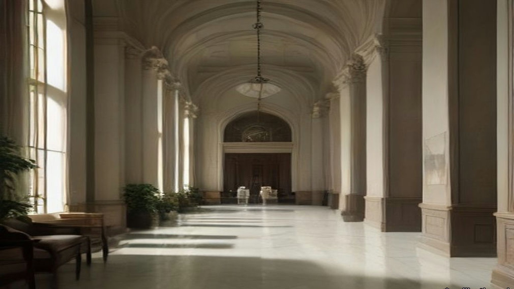
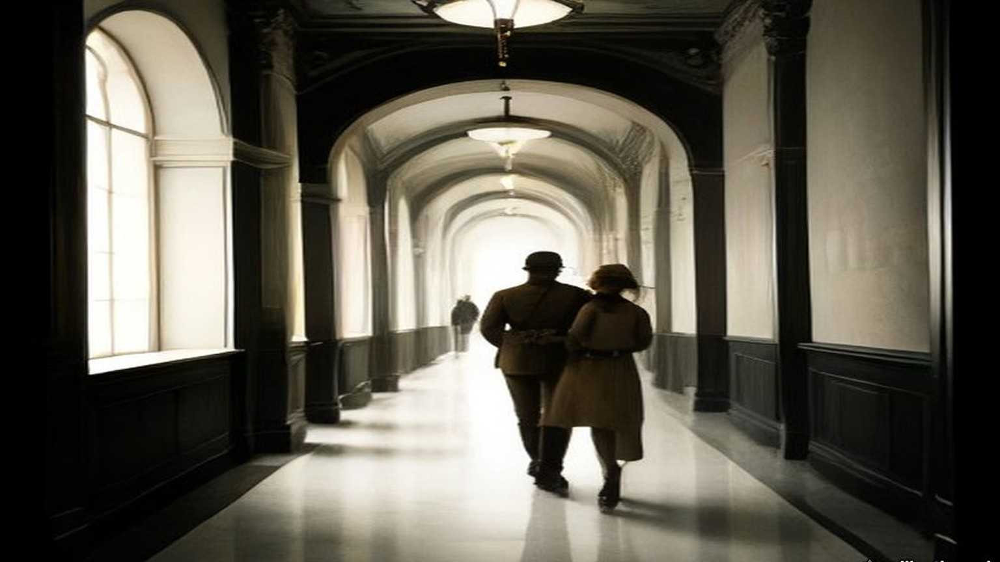
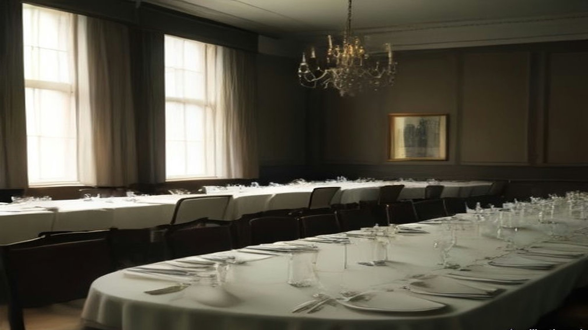
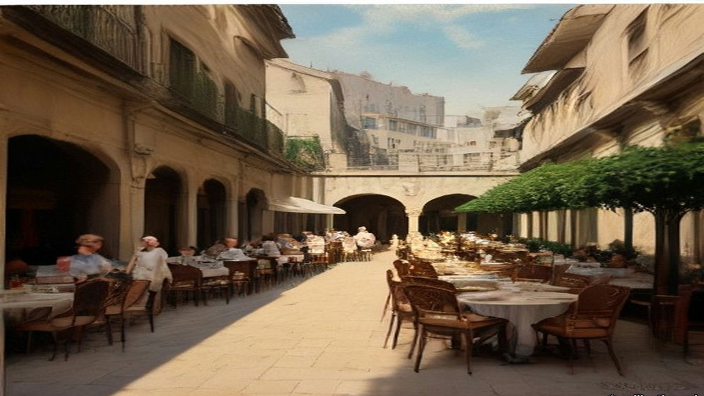
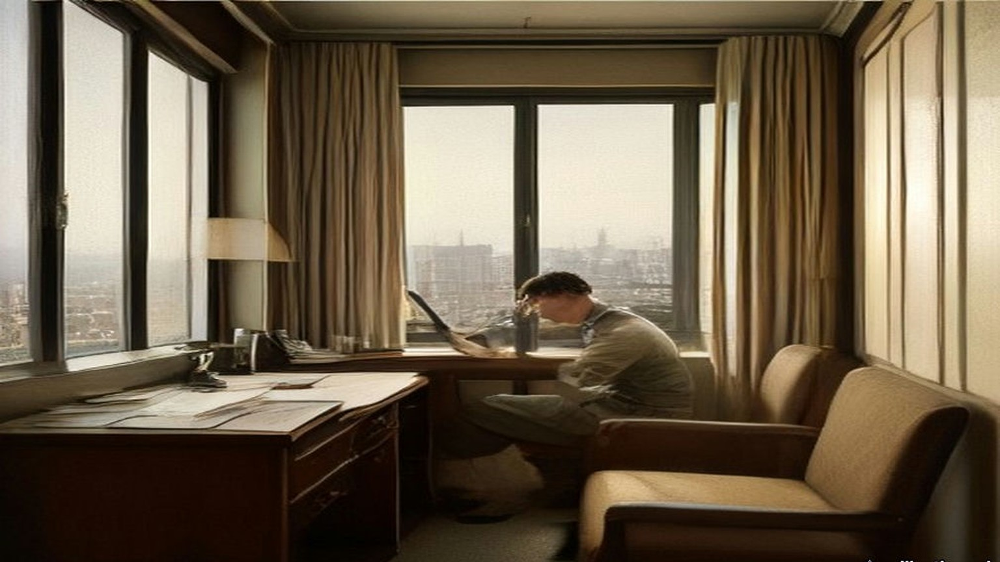
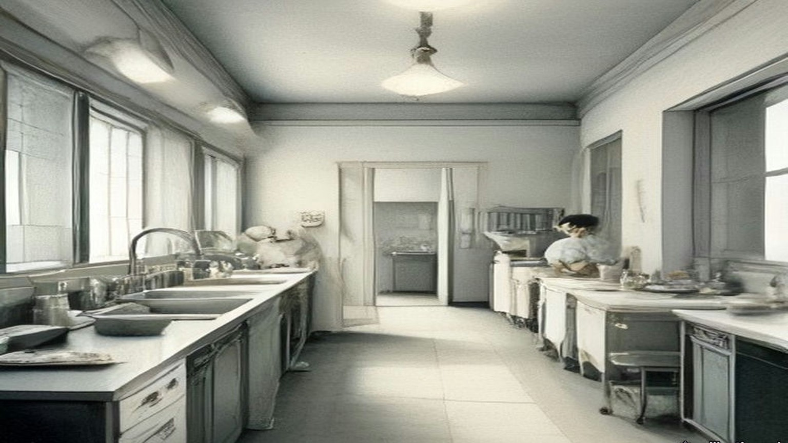
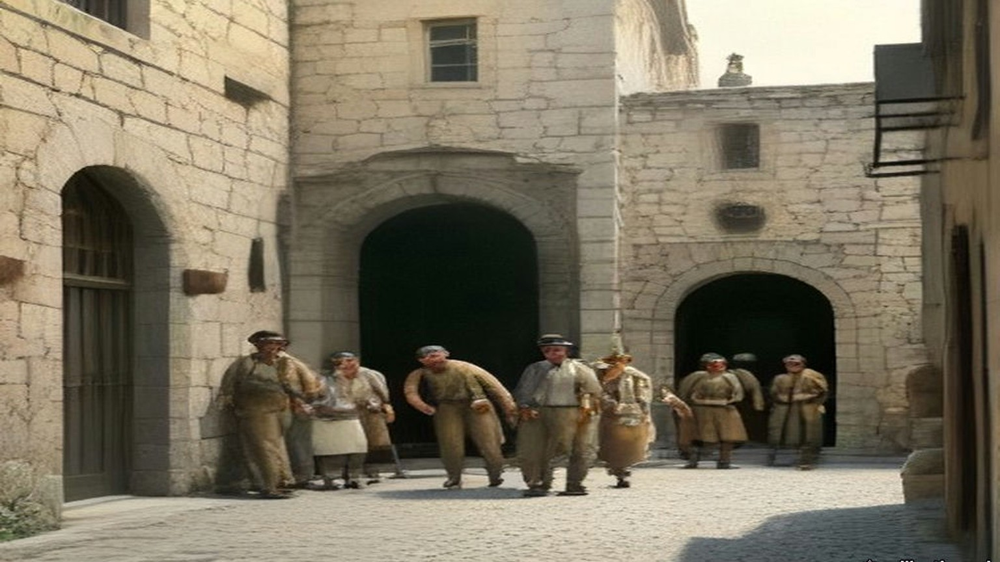

Chapter 26
Milk Cans at the King David, 1935–1947
Jaffa, the hills west of Jenin, Haifa, Tel Aviv, Jerusalem and Westminster, October 1935 to February 1947
Jaffa port, October 1935
Came the ship from Belgium and lay off in the roads, for at Jaffa the ships do not come in to the quay; the lighters go out to the ships. In the boat with him were six men and the oars, and the sea that morning, al-ḥamdu lillāh, was quiet.
Cement, said the manifest. Casks of cement from Belgium. Heavy, the casks, and they swung them down from the ship's side on the derrick into the lighter, and the lighter went low in the water, and they rowed her in to the customs quay. Wallāhi, وَاللهِ, never a cask of cement like that one, the one that split on the stones. Out of the grey came no grey. Came out oiled paper, and in the paper, iron.
The Government's report to the League of Nations for 1935 put it in one sentence. "A large quantity of arms and ammunition smuggled in a consignment of cement from Belgium was discovered in the course of removal from Jaffa Port in October." The consignee disappeared. Arabs in general, the report said, took it, "in view of the name of the consignee," that "Palestinian Jewry was extensively arming itself." The Arab press campaigned against the Government and the Jews. On 26 October there was a one-day strike of protest across the country. At Jaffa the feeling ran high, and a clash between Arabs and Jews was narrowly averted on the boundary between Jaffa and Tel Aviv.
That year the Government registered 61,854 Jewish immigrants, 27,729 of them under the Labour Schedule. Jaffa port handled 402,524 tons of imports, Haifa 787,307.
On the King's birthday that year the High Commissioner had shown clemency. Fourteen prisoners convicted for the disorders of 1929 were released at once, and twenty-two whose death sentences had been commuted to life were to go free in 1936.
* * *
The hills west of Jenin, 7 to 20 November 1935
On 7 November a police sergeant following up a theft in the hills of the Nazareth sub-district was shot dead by men nobody saw. The search that followed found, in that neighbourhood, an armed band under Sheikh ʿIzz al-Dīn al-Qassām, whom the report described as "a political refugee from Syria, possessing no little reputation as a man of religion, and already strongly suspected of being concerned in terroristic acts a few years ago." A few days later a patrol met one of the band and killed him in an exchange of shots.
Said the people of the village that ash-Shaykh, الشَّيْخ, had come into the hills. Ash-Shaykh from Haifa, they said, the preacher, the man of religion. Yā ḥājj, said his neighbour to him at the press, what is it to us? And he said nothing, and the olives went on to the stone.
Came the police up the wadi on the twentieth, many of them, in the khaki, the English and the Arabs together, and they went across the hillside in a line. Then one shot. From where, nobody saw. Then all the hillside shooting, and he lay in the terrace wall behind the old fig with his face in the earth and his hands over the back of his head, and the shooting went on, and on. Yā rabb, يا رَبّ. His heart went in his chest like a goat on a rope. Thirsty he was, and the water in the jar at the house, and the house a long way down the hill, and he did not lift his head. Once a bullet went into the fig above him and a leaf came down onto his neck, and he did not move it.
The report: "On 20th November a sudden shot fired at a post of police searching the hills a few miles west of Jenin led to the discovery of the main band; in the ensuing fight four of them were killed and five captured, another being arrested some days later. One British constable was shot dead and another wounded. The band was well supplied with arms and ammunition." The Royal Commission, two years later, said the same in fewer words: "four of its members killed, including Sheikh Izzed Din."
When it was dark he went home by the goat path, not by the road, and sat in the house with the lamp not lit, and his wife asked him nothing.

* * *
Haifa, November 1935
They buried him in Haifa. The funeral "was attended by a very large concourse," the report said, "and in spite of the efforts of leading Moslems there to maintain order a certain amount of demonstration and stone-throwing occurred." The death "sent a strong wave of sentiment through political and other circles in the country, and the Arabic press united to pay him the tributes of a martyr in articles charged with patriotic emotion."
The Royal Commission quoted one of those articles. "Dear friend and martyr," it said, "I have heard you preach from a platform resting on a sword. To-day . . . you are, by God, a greater preacher than alive you ever were." In Arabic the oath is wallāhi.
A shorter and less general strike had been called on 13 November, over incomplete and misleading reports of speeches made in London a few days before by the Secretary of State and the High Commissioner. Five days after the fight, on 25 November, the leaders of the five Arab parties went to the High Commissioner together with three demands: democratic government, a ban on the transfer of Arab land to Jews, and an immediate stop to Jewish immigration, with a committee to fix what the country's "absorptive capacity" was.
* * *
Jaffa and Jerusalem, April to July 1936
The trouble began on the night of 15 April 1936, when Arab bandits murdered two Jews on the Tulkarm to Nablus road. The next night two Arabs were murdered near Petah Tikva, and Arabs believed it a Jewish reprisal. The funeral of one of the murdered Jews in Tel Aviv on the 17th ended in angry demonstrations and assaults on Arabs in the streets. On the 19th false rumours went round Jaffa that Arabs had been killed, and Arab crowds there killed three Jews. Curfew came down on Jaffa and Tel Aviv. The Emergency Regulations came into force for all Palestine.
On the 20th a National Committee formed at Nablus and called a general strike until the Arab demands of the previous November were met. The five parties joined on the 21st. On the 25th they formed a Supreme Arab Committee, which became the Arab Higher Committee, with Hajj Amin al-Husseini, Mufti of Jerusalem, as President, Awni Abd al-Hadi as Secretary, and as Treasurer Ahmad Hilmi Pasha, manager of the Arab Bank. It resolved "to continue the general strike until the British Government changes its present policy in a fundamental manner, the beginning of which is the stoppage of Jewish immigration." On 8 May a conference of the National Committees in Jerusalem added that Arabs should stop paying taxes. On 18 May the Government approved a Labour Schedule of 4,500 Jewish immigrants for the next six months.
By 2 May, the Royal Commission recorded, "Arab work and trade were virtually at a standstill. Jaffa port was out of action." Only at Haifa port, and in part on the railways, was Arab labour still to be had.
Through May and June the strike hardened. Five Jews, two Arabs and one British policeman were murdered. Two trains were derailed and a bridge was blown up, roads were barricaded and telephone wires cut, and bands of armed Arabs appeared in the hills, among them volunteers from Syria and Iraq. Troops came from Egypt and Malta. On 23 May sixty-one Arab agitators were arrested and most of them sent to live under police supervision away from their home towns. In June some of the leaders, Awni Abd al-Hadi among them, were interned in what the Royal Commission called, in its own quotation marks, a "concentration camp" at Sarafand. In July the Qadis of the Muslim religious courts sent the High Commissioner a memorandum calling the Government's policy "detestable," charging police and military with "unimaginable acts," and warning "the British authorities of the revenge of God the Almighty."
Sat they on the sand by the boats, the lightermen, and the ships lay out in the roads and nobody went out to them. Who works, a traitor. So said the young men of the committee, and they walked along the quay in the mornings and looked at every man. Five weeks, six weeks. The money in the tin went down and then the tin was empty. His wife sold the bracelet. Went he to his cousin in the orange grove and came back with nothing, for the grove also stood still, the fruit green on the trees and no ships to take it when it ripened. Wallāhi, never in his life a summer like this one, the sea flat and the boats on the sand. In the night he lay with his eyes open and counted: the rent, the bread, the oil for the lamp. Always the counting came out the same.
Came the soldiers in June to the old city, to the houses above the port where the lanes go up in steps. Came the police first, to every door: Out. Out, all of you, now. Twice they came. He carried the mattress on his back and his wife the pots, and the children the lamp, and they went out with the others and stood far off on the road. Then the noise. He felt it come up through the soles of his feet before he heard it, and the dust went up white over the roofs, and where his father's house had been was the sky.
On 24 June Mr. Gallacher, the Member for West Fife, asked the Colonial Secretary whether he knew that the old city of Jaffa had been destroyed without warning, that holy places had been destroyed, and that "dynamite was used, to the terror of the women and children." The Colonial Secretary, Mr. Ormsby-Gore, answered. "It is not the case that the old city of Jaffa has been destroyed. What has happened is that it has been considered necessary to demolish a certain limited number of houses to enable two new roads to the port to be constructed through the labryinth of the old city." The Royal Engineers had done the work after due warning. "Families who have been obliged to evacuate their houses in the old city are being paid for one week a special compensatory allowance. I am glad to say there were no casualties."
Gallacher asked how there could be no danger when dynamite was used and the houses round about were shaken. Full warning had been given on two occasions, Ormsby-Gore said; the police moved the people out of the first house before anything began, and no dynamite was used until the police and the military were satisfied that everyone was clear. "When they were satisfied that all was clear then the dynamite was used and the houses were cleared away." Were the police and military to be congratulated on getting the people out before the houses were dynamited? "Certainly; that was the whole object."
On 1 July Mr. Creech Jones asked whether alternative housing had been found for "the 6,000 inhabitants likely to be displaced." Ormsby-Gore said the works were "considered necessary in the interests of public security." On 16 December he told Colonel Wedgwood that the Palestine Government had been authorised to spend £15,000, out of Palestine revenues, on houses "for which a suitable rent will be charged, to accommodate 100 Arab families rendered homeless by the special demolitions in Jaffa." He would not accept that they were refugees. "In the military interests, and in the interests of peace and order in Jaffa, it was decided to dynamite two lines through the town. The Royal Engineers blew up the houses."

* * *
Tel Aviv, 1936
In the same answer Ormsby-Gore said the Palestine Government would give "about £5,000 towards the cost of maintenance and rehabilitation of Jewish refugees in Tel-Aviv from Jaffa and elsewhere." Wedgwood said the Jewish refugees from Jaffa outnumbered the Arab ones about twenty to one. Ormsby-Gore did not accept his figures.
Twenty years in Yafo lived my father, and I born there. The shop of my father, tin and lamps, in Yafo, and Arabs came and bought, and ya'ani, so it was, a word of theirs we had in our mouth like our own. Now we are in Tel Aviv in one room by the sea, six persons, the bedding on the floor. Baruch Hashem, בָּרוּךְ הַשֵּׁם, alive. There is not shop. There is not work. My father sits by the window all the day and his hands on his knees, the hands which were never still. In the night I hear him, he says the Shema, and again the Shema. The key of the shop he has still, on the string, around the neck. Says my mother: when it is quiet we go back. Says my father nothing. Be'ezrat Hashem, בְּעֶזְרַת הַשֵּׁם, with the help of God, says my mother, and puts the bread on the table, the half loaf for six.
The Royal Commission set the losses side by side. "The official list of 'casualties' gives 195 Arabs killed or died of wounds and 804 wounded," it reported, but the full Arab loss "has been credibly estimated at 1,000 killed, mostly in fighting." The official list on the Jewish side gave 80 Jews killed or died of wounds and 308 wounded; the Jewish Agency counted "82 Jews murdered, apart from nine further deaths," and 369 wounded. The Agency reported 80,000 citrus trees destroyed, 62,000 other fruit trees, 64,000 forest trees and 16,500 dunams of crops, and put the damage to Jewish property at about £250,000, £100,000 of it to commercial and industrial premises in Jaffa. Of the Palestine Police and the Trans-Jordan Frontier Force, one officer and fifteen other ranks were killed. Of the British forces, two officers and nineteen other ranks.
The port told the same story in tons. Jaffa's imports fell from 402,524 tons in 1935 to 163,134 in 1936. Haifa's held at 750,722. Afraid the strike would run into the citrus season, the Jewish traders of Tel Aviv formed a Harbour and Communications Council, raised money by private subscription, and built a jetty and lighter basin of their own on the Tel Aviv beach about four miles north of Jaffa. The Government approved it on condition that no municipal money went into it, and it worked as a private port that winter. The Mayor of Tel Aviv told the Royal Commission that after 1936 dependence on Jaffa was "unthinkable" to the Jews.
* * *
Palestine, September 1936 to May 1939
Towards the end of August trained guerrilla leaders came in from outside. One was Fawzi al-Qawuqji, a Syrian who had served in the Turkish army in the war, won the Légion d'honneur in French intelligence work, joined the Druze revolt of 1925, been sentenced to death, escaped to the Hejaz, advised Ibn Saud, and resigned his commission in the Iraqi army in 1936. In Palestine he named himself "generalissimo" and drilled the bands in trench warfare. The oil pipeline across the Plain of Esdraelon was repeatedly punctured. Roads were mined. On 7 September the Colonial Office called the situation "a direct challenge to the authority of the British Government in Palestine" and sent a further division.
By the end of September 1936, after Lieutenant-General Dill took command, there were about 20,000 British troops in the country. An Order in Council allowed the High Commissioner to apply martial law. In October the Arab Higher Committee published identical appeals from King Ibn Saud, King Ghazi of Iraq and the Amir Abdullah of Transjordan, addressed to "our sons the Arabs of Palestine," asking them to resolve for peace, and called on "the noble Arab nation in Palestine to resort to quietness and to put an end to the strike and disorders." Work went back on the 12th. The orange season opened in November, and the Commission noted that many Arabs had not wanted to lose it.

The Commission totted up the bill. The direct cost of the disturbances to the Palestine Treasury in 1936–37 was more than £1,500,000, of which £1,186,000 was for additional troops, £144,000 for extra police and prisons, and about £35,000 for roads, railway bridges and rolling stock. The loss of revenue that year was put at £900,000, and the estimate for the next year at £750,000. The cost of the troops was charged to Palestine's own taxpayers. Losses to the two communities beyond that, the Commission wrote, "must have run into millions of pounds."
In the middle of the strike 137 Arab senior officials and judges of the Palestine Government, and some weeks later 1,200 Arab officials of the Second Division, had signed memoranda to the High Commissioner. The senior officials wrote that the disturbances came from a feeling of despair caused by "loss of faith in the value of official pledges and assurances for the future," and that "We have no hesitation in recommending the stoppage of immigration as the only fair, humane, and honourable solution of the deadlock." "We must conscientiously raise a protest against the present policy of repression." Only the police officials did not sign.
The Royal Commission arrived in Jerusalem on 11 November 1936. Six days earlier the Colonial Secretary had told the Commons that suspending immigration while it sat "would not be justifiable on economic or on other grounds." The Arab Higher Committee called that statement "a strong insult to the Arabs and hostile to their interests," and boycotted the Commission at first and, at the instance of King Ibn Saud and King Ghazi, gave evidence in the end. Its members said "that their quarrel is with the existence of the Mandate itself." They did not accept the Government's reading of the McMahon letter. They denied the validity of the Balfour Declaration. Palestine west of the Jordan, they said, had never been meant to be left out of the McMahon pledge, and the volunteers from Palestine had joined King Hussein's revolt for a single end, the independence of the Arab lands, Palestine included.
The Commission's answer, in July 1937, was partition. "Manifestly the problem cannot be solved by giving either the Arabs or the Jews all they want. The answer to the question 'Which of them in the end will govern Palestine?' must surely be 'Neither'." Britain could not hand over to Arab rule "400,000 Jews, whose entry into Palestine has been for the most part facilitated by the British Government and approved by the League of Nations," nor, if the Jews became a majority, "a million or so of Arabs" to theirs. "But, while neither race can justly rule all Palestine, we see no reason why, if it were practicable, each race should not rule part of it."
In May 1939 the Government laid its new policy before Parliament as Cmd. 6019. "His Majesty's Government therefore now declare unequivocally that it is not part of their policy that Palestine should become a Jewish State." Jewish immigration over the next five years would be "some 75,000," in quotas of 10,000 a year, with 25,000 refugees on top. "After the period of five years, no further Jewish immigration will be permitted unless the Arabs of Palestine are prepared to acquiesce in it." On land, the paper said that in certain areas there was "no room for further transfers of Arab land," and "the High Commissioner will be given general powers to prohibit and regulate transfers of land." The objective was "the establishment within 10 years of an independent Palestine State in such treaty relations with the United Kingdom as will provide satisfactorily for the commercial and strategic requirements of both countries in the future."
* * *
The King David Hotel, Jerusalem, 22 July 1946
Seven years later part of the King David Hotel in Jerusalem held Government offices and what Anthony Eden would call, in the Commons, the British Headquarters in Jerusalem. The rest was still a hotel, with its kitchens and its tradesmen's entrance.
It was the heat of the day in the kitchen. Peeled he the potatoes at the long table, his sleeves to the elbow and the water grey in the basin. Outside, in the street, a bang, not big. Shū hāda, what is this? Lifted the cook his head and then went back to his pot. In Jerusalem that summer every day a bang. The pans hung on their hooks over the stove, and the steam went up from the big pot, and from the other room came the clatter of the plates for the dining room, and the sweat ran into his eyes and he wiped it with the back of his wrist.
Came the lorry to the tradesmen's door, and the men got down from it, and they were not the men of the milk. Pistols. Up, said they, the hands up, all of you, against the wall. He put the knife down on the table very slowly, so slowly, and the potato beside it, and stood with his back to the tiles and his palms flat on the cold of them, and his knees had no bone in them. In they carried the cans, milk cans, big ones, one man to each, heavy, so the men carrying them leaned. Somewhere in the passage a shot, and then nothing.
The official report from Jerusalem, read in the Commons the next day, gave it in this order. After exploding "a small bomb in the street, presumably as a diversionary measure," which "did virtually no damage," "a lorry drove up to the tradesmen's entrance of the King David Hotel and the occupants, after holding up the staff at pistol point, entered the kitchen premises carrying a number of milk cans. At some stage of the proceedings, they shot and seriously wounded a British soldier who attempted to interfere with them. All available information so far is to the effect that they were Jews. Somewhere in the basement of the hotel they planted bombs which went off shortly afterwards. They appear to have made good their escape."

Then the men went out, and the lorry went, and somebody said run, and he ran. Out into the light, and he did not stop, and he was across the road when the ground came up under him. The noise was not a noise. It was a hand that struck him flat in the back, and then the dust, white, so thick he could not see his hand, and in his mouth the taste of lime. Something was in his ear, a ringing, high, that did not stop. People were running, past him and towards, and their mouths were open and he could not hear them. When he could stand he turned round. Where the offices of the Government had been, at the end of the hotel, was a hill of stone.

* * *
The House of Commons, 23 July 1946
Anthony Eden asked the Prime Minister by Private Notice for a statement. Clement Attlee rose. "Hon. Members will have learned with horror of the brutal and murderous crime committed yesterday in Jerusalem. Of all the outrages which have occurred in Palestine, and they have been many and horrible in the last few months, this is the worst. By this insane act of terrorism 93 innocent people have been killed or are missing in the ruins. The latest figures of casualties are 41 dead, 52 missing and 53 injured."
He read the official report. He said the rescue work still went on and that the next-of-kin were being told by telegram as soon as accurate information came in. "The High Commissioner, Sir Alan Cunningham, has returned to Palestine by air." The Government were consulting the United States on proposals for a settlement and "will not be diverted by acts of violence from their search for a just and final solution of this problem."
Eden associated the Opposition with "the Prime Minister's expressions of horror at this dastardly and inexcusable outrage." Mr. Lipson asked what Jews in Britain could do, "who are shocked by this murderous and senseless outrage, which brings dishonour and shame to the name of Jew," and whether the Prime Minister would call on their religious and lay leaders, the Zionists among them, to condemn it publicly. Sydney Silverman associated himself "with every word" about "the criminal insanity of this outrage," and then asked whether there was any credible or direct evidence yet that the perpetrators were Jews, and whether the detention without trial of the moderate leaders did not leave the field free to the terrorists. Attlee: "It would be quite improper for me to try to make any conjecture beyond what I have got from the official report."
Mr. Gallacher asked the Government to consider "the necessity of bringing about an independent Palestinian State where Arabs and Jews will have to co-operate together." Attlee said the talks with the Americans were making great progress. Colonel Hutchison offered the hundreds of men in Britain trained with the wartime resistance movements, to put down such organisations, "whether Arab or Jewish." Mr. H. Hynd asked the Prime Minister to be careful, in considering it, "not to set up anything like the 'Black and Tans'." Earl Winterton asked for pensions for the Palestine Police dead the same as if they had been killed in action, since they were fighting "as vile and treacherous a foe as the Nazis." Attlee understood that was the position and asked for the question to be put down for the Colonial Secretary. Major Legge-Bourke said General Barker had wanted for some time to take over the whole of the hotel and had not been allowed to. Attlee said he was having an inquiry made "into the position with regard to the King David Hotel." Mr. Janner said the Jewish Agency Executive and the National Council of Palestine Jewry had condemned the act and wanted those responsible suppressed. "I have noted that statement and welcomed it."
Earlier in the same sitting, among the questions on national finance, Mr. Keeling had asked the Chancellor of the Exchequer what his department had spent in Palestine in the latest six months for which figures existed. Hugh Dalton: "£17¾ million for the six months to 31st March, 1946."
* * *
The House of Commons, 31 July 1946
Attlee had gone to the Peace Conference in Paris, so Herbert Morrison opened the debate on Palestine. "In the destruction of the Government offices at the King David Hotel in Jerusalem, 84 men and women," he said, Arabs, Jews and British, "were killed, and 46 injured, while 22 are still missing. These were people innocent of any crime, members of the public going about their ordinary business, and many loyal and single-hearted servants of the community." Police and military, he said, had moved after every act of terrorism to track down those responsible. "The greatest obstacle to success in these operations has been the refusal of the Jewish population in Palestine to cooperate with the forces of law and order." On 29 June there had been widespread arrests and searches. Since the outrage 446 Jews whose records showed association with the terrorist organisations had been arrested, and on 30 July the army had gone into Tel Aviv.

General Barker had written to his officers, by the newspaper reports Morrison cited, forbidding British soldiers "relationships of a social character with Jews" and ordering that any association in the way of duty be "as brief as possible." The Government, Morrison said, must "dissociate themselves from the actual terms in which the letter is couched." Families of British and Palestinian civil servants and police were provided for by legislation in force "since 1935," dealing with pensions and compensation arising out of acts of terrorism.
Then he set out the plan the British and American experts had drawn up, provincial autonomy, an Arab province and a Jewish province under a central government. If it went ahead, 100,000 Jews would be brought from Europe within twelve months. "Under this plan, the United States Government would be asked to undertake sole responsibility for the sea transportation of those Jewish refugees, to whom I have referred, from Europe to Palestine. They would provide the ships and would defray the whole cost of sea transportation." They would feed the immigrants for their first two months. The Jewish organisations would pay for settling them. The United States would be asked for a substantial grant for Arab development, "while this country should be asked to take ultimate responsibility for meeting Palestine's annual budgetary deficit up to the time when increased revenues made this unnecessary."
Mr. Crossman, the Member for East Coventry, had sat on the Anglo-American Committee and still believed, he said, that if "our Report had been acted on immediately, a great chance might have come off." He told the House what he had been told in Palestine. On three occasions, he said, Hagana intelligence had warned British security that the King David "would, one day, have an assault from the inside, and that better security should be employed by the police and military there." No further security was imposed. "The kitchens and night club were left inadequately guarded." He was careful how he said it. "I am putting these things forward for check. I do not know whether they are wholly true."
The same day Mr. Gallacher asked George Hall, the Colonial Secretary, about the recruiting poster for the Palestine Police, which advertised the work as "a man's job." Would the Minister assure the House "that this is not an attempt to reorganise the Black and Tans?" Hall answered that the police forces were apart from the defence forces in Palestine.
* * *
The House of Commons, 18 February 1947
On 18 February 1947 Ernest Bevin, the Foreign Secretary, told the House that "Ever since they took office the Government have laboured incessantly to find a solution of the Palestine problem," and that the London conference with the Arabs and the talks with the Zionist Organisation had come to an end. "There are in Palestine about 1,200,000 Arabs and 600,000 Jews. For the Jews the essential point of principle is the creation of a sovereign Jewish State. For the Arabs, the essential point of principle is to resist to the last the establishment of Jewish sovereignty in any part of Palestine." His Majesty's Government had no power under the Mandate "to award the country either to the Arabs or to the Jews, or even to partition it between them."
"We have, therefore, reached the conclusion that the only course now open to us is to submit the problem to the judgment of the United Nations." They would explain "that the Mandate has proved to be unworkable in practice, and that the obligations undertaken to the two communities in Palestine have been shown to be irreconcilable." They would ask the United Nations to recommend a settlement. "We do not intend ourselves to recommend any particular solution." The General Assembly would not meet before September.
He gave the numbers on immigration. Since July 1945, 29,000 Jews had been admitted. The Government's last proposals, which both sides had rejected outright even as a basis for discussion, would have let in 4,000 a month for two years, inside a unitary State with Arab and Jewish areas and five years of trusteeship.
Winston Churchill asked whether Britain was to go on carrying the whole burden of law and order and administration until the United Nations had solved the problem. "How does he justify keeping 100,000 British soldiers in Palestine, who are needed here, and spending £30 million to £40 million a year from our diminishing resources upon this vast apparatus of protraction and delay?" "I very much regret this rhetorical display about protracted delay," Bevin answered. He said that fifteen hundred Jewish immigrants a month would go on being admitted in the meantime. "At least 1,500?" asked Mr. Boyd-Carpenter. "Fifteen hundred a month will go." "Or more?" Bevin understood the point. "Fifteen hundred, guaranteed during the interim period, will continue to go in." Mr. Keeling asked: "No more?"
In the same sitting Colonel Crosthwaite-Eyre asked the Chancellor what had been claimed from the Palestine Government towards Britain's cost of defending Palestine. Dalton answered. "The Government of Palestine contributes £42,797 a year towards the cost of the Transjordan Frontier Forces. It also meets the cost of the Palestine Police, the cost of the Cyprus camps for illegal immigrants, and expenditure on making good property and compensating individuals in connection with terrorist outrages." Major Legge-Bourke asked whether "property" included railways.
"I should expect so," Dalton said, "but perhaps the hon. and gallant Gentleman will let me look it up."

Important names
- Balfour, Arthur James (1 mentions in this chapter): British Conservative Prime Minister, Chief Secretary for Ireland, and Foreign Secretary who issued the 1917 Balfour Declaration.
- Churchill, Winston (1 mentions in this chapter): British cabinet minister (Home Secretary, First Lord of the Admiralty, War and Colonial Secretary, and Prime Minister) recurring across the Irish, Middle Eastern, and Indian settlements.
- McMahon, Henry (2 mentions in this chapter): British High Commissioner in Egypt who exchanged the 1915–1916 correspondence with Sharif Hussein of Mecca.
Sources
- Report by His Majesty's Government in the United Kingdom of Great Britain and Northern Ireland to the Council of the League of Nations on the Administration of Palestine and Trans-Jordan for the Year 1935 (Colonial No. 112). §§12–13 (the Jaffa cement consignment; the strikes of 26 October and 13 November; the band, 7 and 20 November; the Haifa funeral; the press); §24 (61,854 Jewish immigrants). Read in the retyped transcription hosted by israeled.org (Emory University file). https://israeled.org/wp-content/uploads/2014/10/1935-LON-Transjordan.pdf
- Palestine Royal Commission Report. Cmd. 5479. London: HMSO, July 1937. Ch. III §§87–90 (the King's birthday clemency of 1935; the arms in cement; al-Qassam; the press quotation; the demands of 25 November 1935); ch. IV §§2–35 (the 1936 disturbances; strike; the Arab Higher Committee; taxes; the Labour Schedule; Jaffa port; the officials' memoranda; Dill and 20,000 troops; the Kings' appeal; the boycott and evidence of the Arab Higher Committee; casualties; losses; cost); ch. VI §§64–66 (Jaffa and Haifa tonnage, 1932–1936; the Tel Aviv lighter basin); ch. XX §19 (partition). Internet Archive, palestine-royal-commission-report (ProQuest scan, OCR).
- House of Commons Debates, 24 June 1936, vol. 313, cc. 1747–8, "Jaffa (Demolition of Houses)" (Gallacher, Ormsby-Gore). https://api.parliament.uk/historic-hansard/commons/1936/jun/24/jaffa-demolition-of-houses
- House of Commons Debates, 1 July 1936, vol. 314, cc. 386–7, "Jaffa (Demolition of Houses)" (Creech Jones, Ormsby-Gore, Gallacher). https://api.parliament.uk/historic-hansard/commons/1936/jul/01/jaffa-demolition-of-houses
- House of Commons Debates, 16 December 1936, vol. 318, cc. 2436–8, "Demolitions, Jaffa (Re-housing)" (Wedgwood, Ormsby-Gore, Wilkinson). https://api.parliament.uk/historic-hansard/commons/1936/dec/16/demolitions-jaffa-re-housing
- Palestine: Statement of Policy. Cmd. 6019. London: HMSO, May 1939. Read in the Avalon Project transcription, Yale Law School (first-edition source file macdonald_white_paper_1939.html). The month is fixed by HC Deb 22 May 1939, vol. 347, c. 1895, which refers to "Command Paper 6019." https://api.parliament.uk/historic-hansard/commons/1939/may/22/palestine
- House of Commons Debates, 23 July 1946, vol. 425, cc. 1877–81, "Terrorist Outrage, Jerusalem" (Eden, Attlee, Lipson, Silverman, Hutchison, Winterton, Hynd, Gallacher, Legge-Bourke, Janner). https://api.parliament.uk/historic-hansard/commons/1946/jul/23/terrorist-outrage-jerusalem
- House of Commons Debates, 23 July 1946, vol. 425, c. 1871, "Palestine (Expenditure)" (Keeling, Dalton). https://api.parliament.uk/historic-hansard/commons/1946/jul/23/palestine-expenditure
- House of Commons Debates, 31 July 1946, vol. 426, "Palestine" (Morrison, cc. 957–60; Crossman, cc. 1008–10). https://api.parliament.uk/historic-hansard/commons/1946/jul/31/palestine-1
- House of Commons Debates, 31 July 1946, vol. 426, cc. 934–5, "Police Recruiting Poster" (Gallacher, Hall, Stephen). https://api.parliament.uk/historic-hansard/commons/1946/jul/31/police-recruiting-poster
- House of Commons Debates, 18 February 1947, vol. 433, cc. 985–90, "Palestine Conference (Government Policy)" (Bevin, Churchill, Boyd-Carpenter, Keeling). https://api.parliament.uk/historic-hansard/commons/1947/feb/18/palestine-conference-government-policy
- House of Commons Debates, 18 February 1947, vol. 433, cc. 973–4, "Palestine (Defence Expenditure)" (Crosthwaite-Eyre, Dalton, Legge-Bourke). https://api.parliament.uk/historic-hansard/commons/1947/feb/18/palestine-defence-expenditure